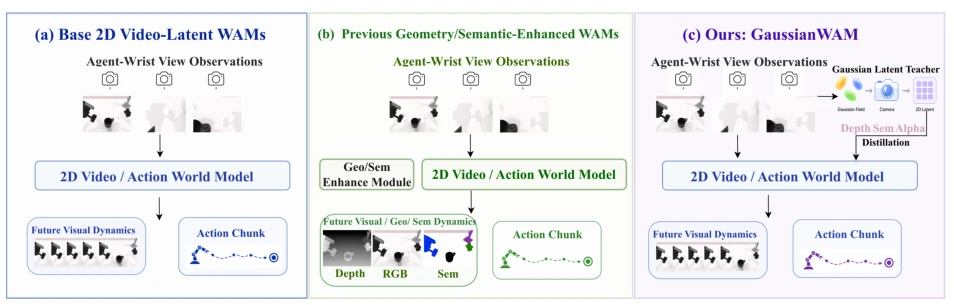
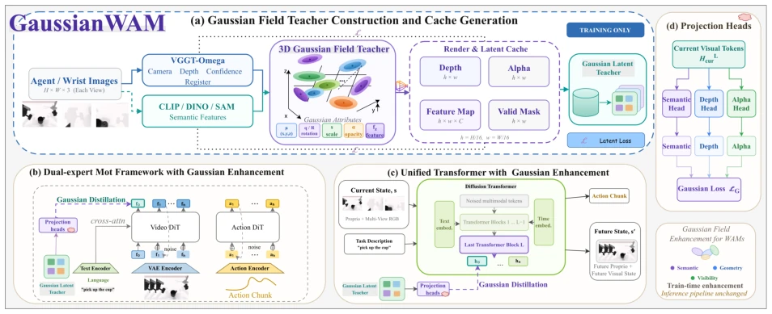
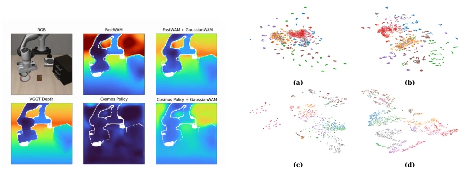

GaussianWAM: Distilling Geometry and Semantics from 3D Gaussian Fields into World-Action Models
Zijian Zhang, Yuqing Jiang, Weitao Zhou, Minglei Li, Jinhao Zhang, Yao Mu abspdf
论文点评Review
GaussianWAM 是个典型的“训练时开挂，推理时隐身”的 trick。它利用 3D Gaussian 作为临时老师，把几何和语义知识蒸馏进 WAM 的潜空间。虽然推理零开销，但本质还是靠外部模型“喂饭”。对于 FastWAM 这种视频预测模型，它强行注入了 3D 约束，效果确实猛，LIBERO-Plus 直接拉了 19 个点。不过，依赖多视图数据和冻结的 Foundation Model，算不算真正的具身智能进步？还是只是数据增强的高级版？这种训练时增强策略虽然保留了部署效率，但增加了训练阶段的复杂度和显存占用，且高度依赖多视图同步数据，在单目场景下可能失效。总的来说，这是一个在推理效率和性能之间找到的巧妙平衡点，但并未解决 WAM 本质上的 3D 理解缺失问题，更像是一种高效的微调手段。
—
研究动机Motivation
现有的 WAMs 如 FastWAM (Yuan et al., 2026b) 和 Cosmos Policy (Kim et al., 2026) 主要优化视频预测，潜空间缺乏显式的 3D 几何结构。机器人操作需要精确的空间理解，仅靠 RGB 重建无法保证几何可靠性。之前的几何感知方法要么增加推理成本（显式 3D 模型），要么将几何和语义作为独立信号，缺乏统一的空间载体。这导致模型在分布外场景（如视角变化）下表现脆弱。此外，语言指令的条件化并不保证视觉 token 与任务相关物体在空间上对齐。因此，如何将异构的几何和语义知识统一为空间连贯的表示，且不牺牲推理效率，是关键问题。现有工作如 GeoSem-WAM (Ma et al., 2026) 虽引入几何语义，但未统一空间载体，导致监督信号分散。
—

Figure 1 Comparison of WAM enhancement paradigms. (a) Conventional WAMs learn world-action representations primarily in 2D video or latent space. (b) Previous geometry- or semantics-aware WAMs introduce dedicated spatial enhancement modules or structured representations into the modeling pipeline. (c) GaussianWAM instead uses a training-time 3D Gaussian teacher to inject geometry-, semantics-, and coverage-aware supervision into the original WAM representations, without modifying the inference backbone.
方法Method
核心是构建一个训练时的 3D Gaussian 教师。首先，利用冻结的 VGGT (Wang et al., 2025) 和 CLIP (Radford et al., 2021) 从多视图观测中提取深度和语义特征，初始化为 3D Gaussian 场。接着，通过可微渲染将高斯场投影回 WAM 的 token 网格，生成语义、深度和覆盖度（alpha）目标，并缓存。然后，在 WAM 末端附加轻量级预测头，将这些缓存的目标蒸馏进当前观测的视觉表示中，损失函数包括语义对齐、深度 L1 和 alpha 覆盖损失。最后，推理时移除所有高斯模块和教师，保留原始 WAM 路径。这种“统一空间载体”确保了异构信号在 3D 坐标下的对齐，避免了独立蒸馏带来的空间不一致。该方法兼容 FastWAM 和 Cosmos Policy 两种架构，通过 MoT 或 DiT 结构将增强表示传递给动作专家。
—

Figure 2 Overview of GaussianWAM. (a) A 3D Gaussian teacher is constructed from synchronized multi-view observations and rendered into semantic, depth, and alpha targets, together with a validity mask, which are cached for training. (b) In FastWAM-style dual-expert MoT models, Gaussian supervision is applied to current-observation video representations. (c) In Cosmos-Policy-style unified Transformers, the same supervision is applied to current-observation visual tokens in the shared backbone. (d) Lightweight semantic, depth, and alpha heads distill the cached Gaussian targets into WAM visual representations. All Gaussian-related modules are removed at inference, preserving the original WAM forward path and computational cost.
Figure 3 Real-world evaluation and success rates. The left panel shows two bimanual tasks under standard, layout, camera, and visual-noise variations. The right panel shows success rates for π0.5, FastWAM, and GaussianWAM under the four settings. Each task uses 100 demonstrations and 20 evaluation trials per setting.
其他图片Other Figures

Figure 5 t-SNE visualization of final-layer visual- semantic representations. Panels (a) and (c) show the base FastWAM and Cosmos Policy representations, while panels (b) and (d) show their GaussianWAM-enhanced counterparts.